A private Clarity Session for women who feel deeply affected by one specific person — even when the story has gone quiet.
We look at the pattern beneath the intensity, the silence, the longing, and the questions you have not been able to put into words.
Book a Clarity Session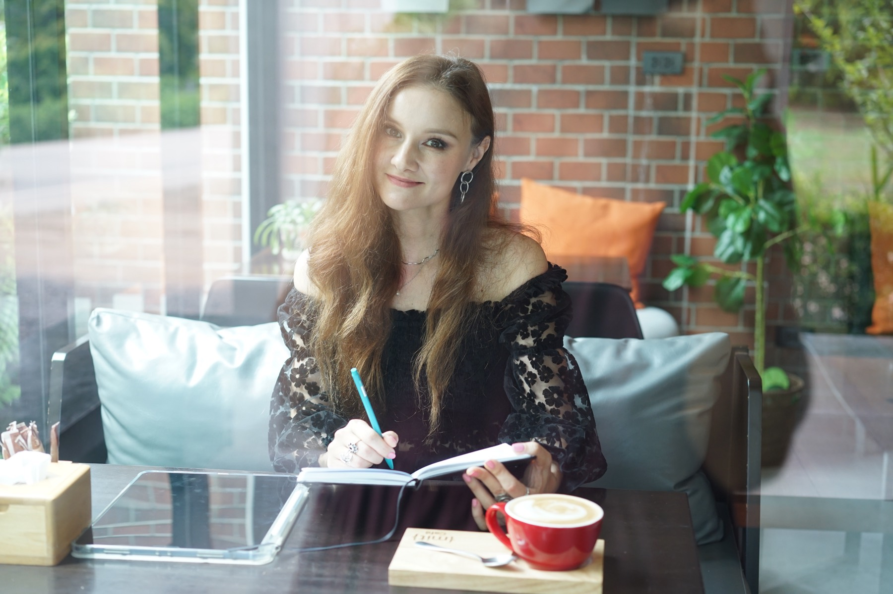
A private space to make sense of what you’ve been carrying alone.
The Clarity Session is a private, one to one reading of the connection between you and one specific person.
Together, we look at the pattern beneath the intensity: the pull, the silence, the runner and chaser dynamic, the dreams, the synchronicities, the emotional waves, and the questions you have been carrying alone.
You receive a compassionate, grounded space to understand what you are experiencing and what you can choose now.
You may not receive every answer about him. You will leave with a clearer view of what is happening, what belongs to you, what belongs to him, and what you can choose next.
We look at what happened, what changed, and what keeps repeating between you.
You will have clearer words for the pull, the grief, the hope, the fear, and the uncertainty.
Your 11 page reading gives you something practical to return to after the session.
You can make your next choice from clarity instead of panic, guilt, longing, or fear.
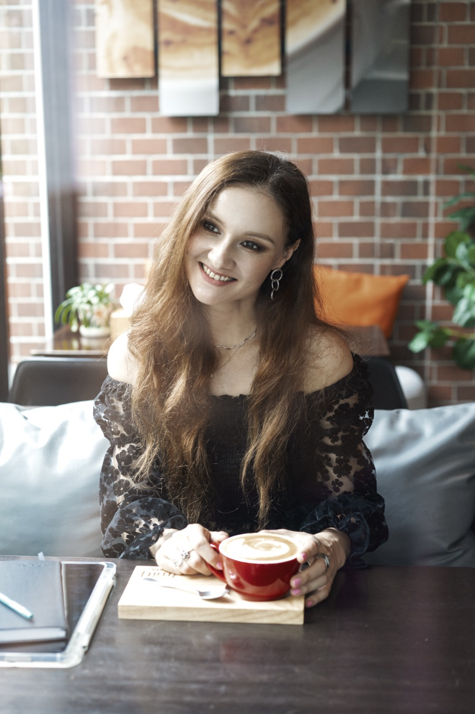
I’m Alexandra, creator of the StarSeedSoul system.
I help women understand the pattern beneath a powerful connection and see what they can choose now.
I created this work for women whose experiences do not fit into simple relationship language.
Every powerful bond follows one of ten patterns. Tap a card and see if one of them sounds like yours.
Tap a card to reveal the pattern
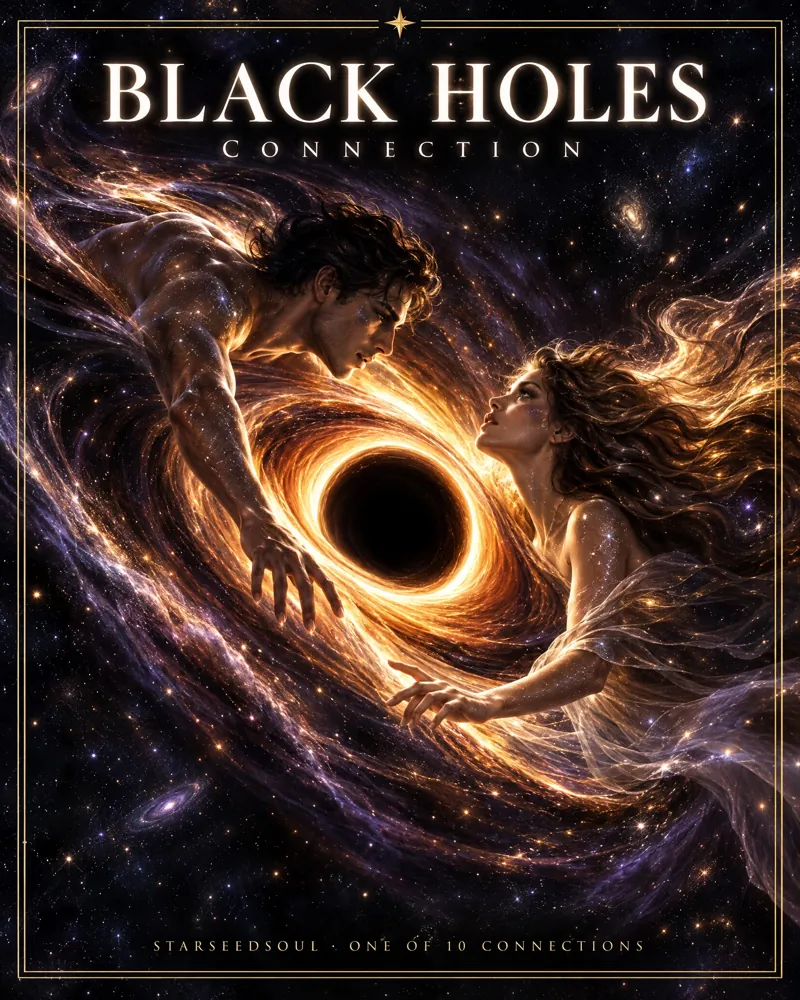
How Black Holes can feel“He looked like the answer to everything I doubted. Now I give this bond everything I have, and it keeps disappearing.”One of 10 connectionsThis is ours · Book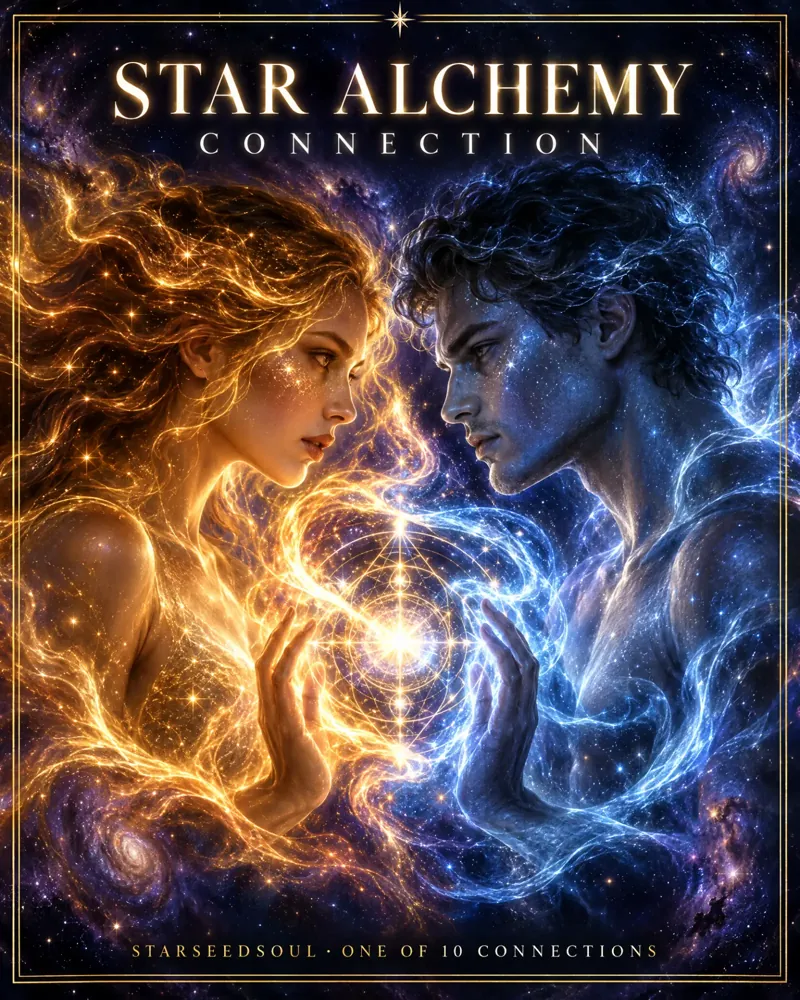
How Star Alchemy can feel“I explain, he hears something else, and the same misunderstanding comes back in new clothes. And still, nobody makes me feel this alive.”One of 10 connectionsThis is ours · Book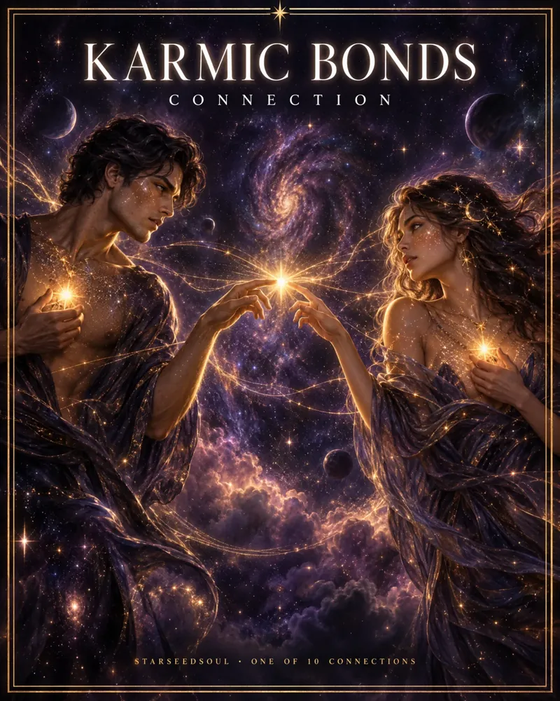
How Karmic Bonds can feel“It started as admiration. Now the same arguments come back again and again, and they never land.”One of 10 connectionsThis is ours · Book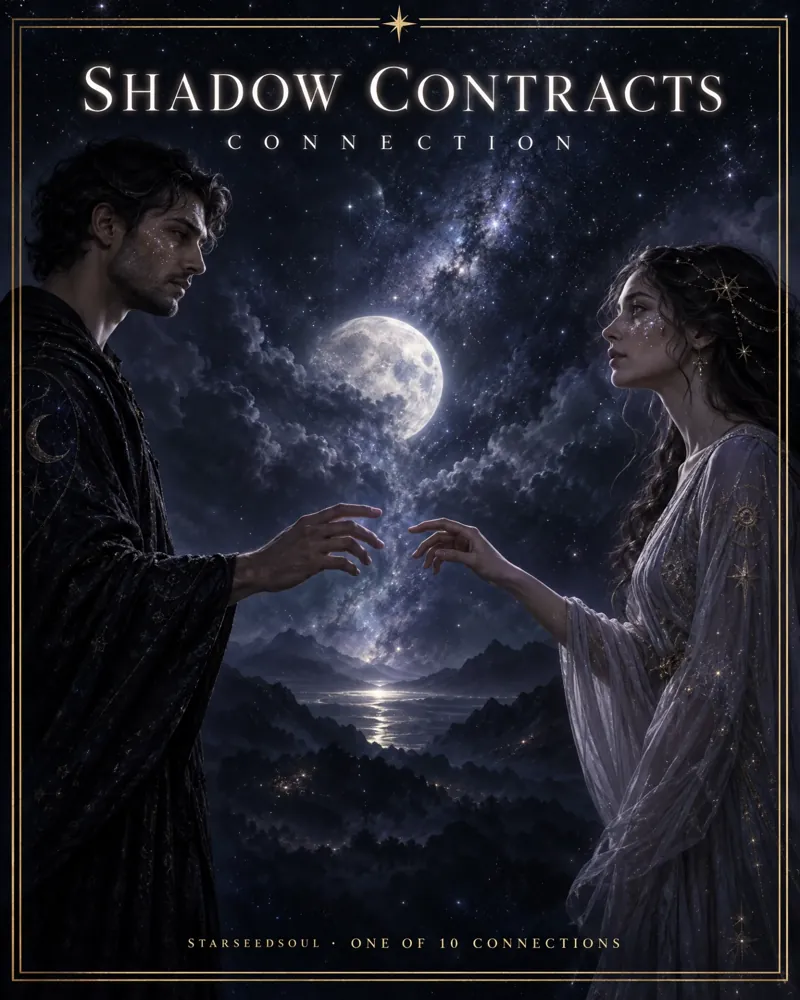
How Shadow Contracts can feel“It was so gentle at first. Now we both wait for the other to decide, and the energy between us keeps thinning.”One of 10 connectionsThis is ours · Book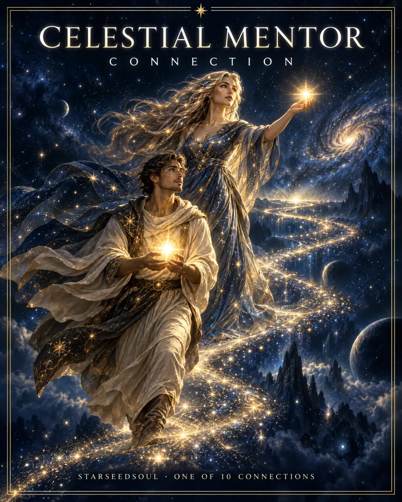
How Celestial Mentor can feel“At first I lit up every time he spoke. Years later I still feel like his student, and I am waiting for my turn to lead.”One of 10 connectionsThis is ours · Book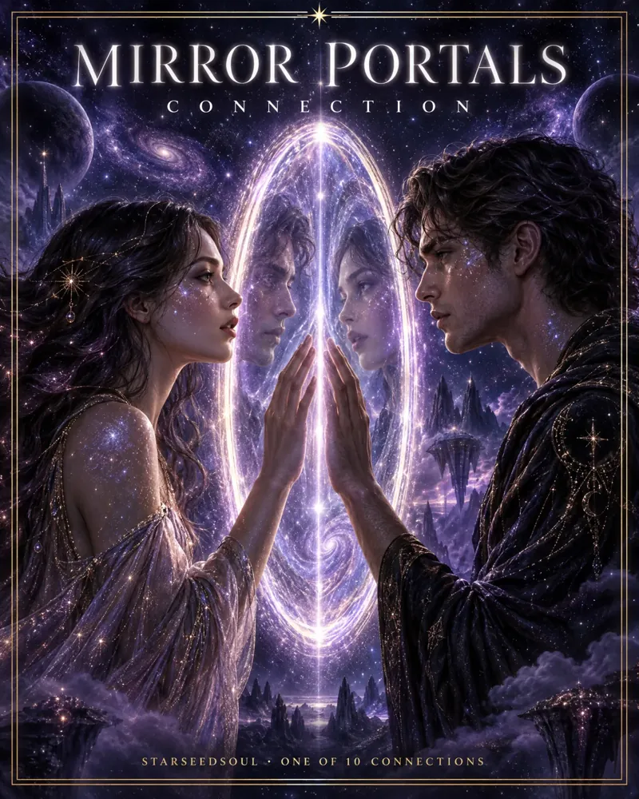
How Mirror Portals can feel“He understands me without a word, and we get stuck on the very same things, every time.”One of 10 connectionsThis is ours · Book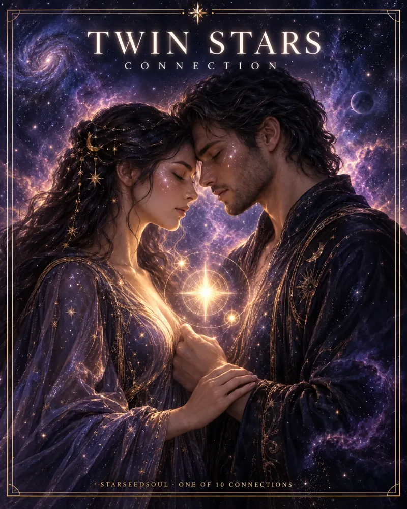
How Twin Stars can feel“We can talk for hours. He believes in me exactly where I doubt myself, and I cannot imagine losing that.”One of 10 connectionsThis is ours · Book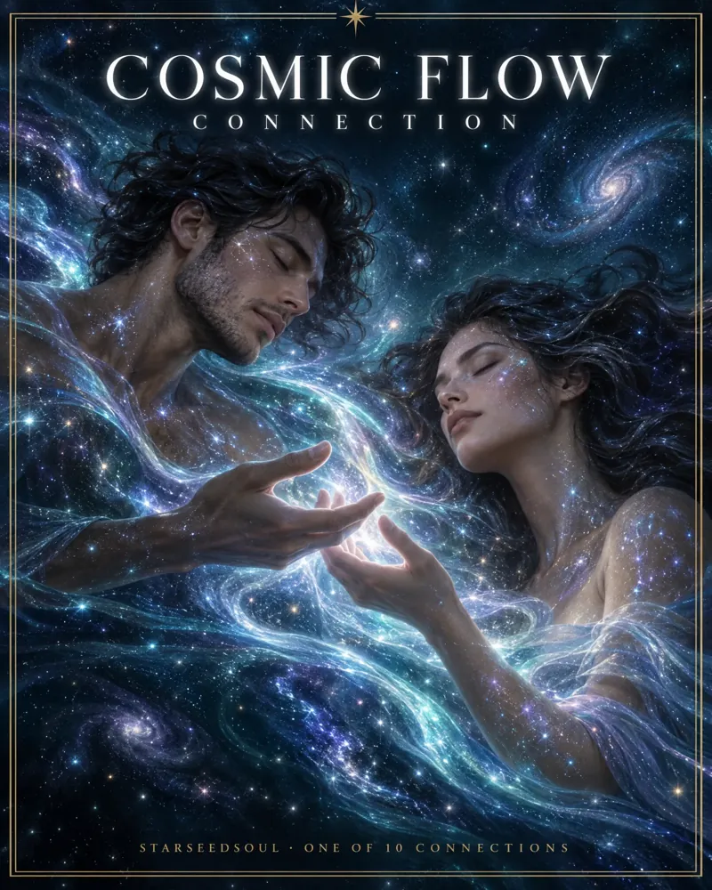
How Cosmic Flow can feel“It is quiet and easy with him. Fewer words, everything just gets done. Sometimes I wonder if calm can be this deep.”One of 10 connectionsThis is ours · Book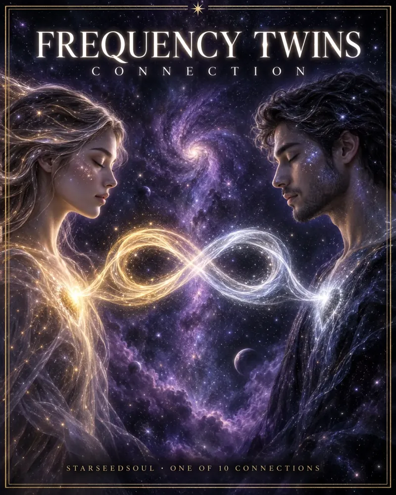
How Frequency Twins can feel“He gives me, with no effort at all, the thing I always had to fight for. It feels so easy that I keep waiting for the catch.”One of 10 connectionsThis is ours · BookYou may be living a full life on the outside while this connection continues to take up space inside you. You may be tired of explaining it to people who reduce everything to “If he wanted to be with you, he would.”
That may be a practical truth. But it does not automatically explain the emotional reality you are living with.
You are allowed to look at both: what you feel and what is actually happening. You do not have to prove the spiritual explanation before you are allowed to take your experience seriously.
The purpose of the session is to bring more clarity to the connection you have been carrying — by looking at the whole picture, not just one part of the experience.
Understand why this connection may still feel so present, even when there has been distance, silence, or very little contact.
Look more closely at the attraction, longing, dreams, synchronicities, uncertainty, and repeated thoughts that keep bringing you back to him.
Bring together what you feel, what has happened, and what you need at this point in your life.
During the session, you share the basic story: how you met, what happened, where the distance began, what keeps repeating, and what you most want to understand. You do not need to organize it perfectly.
During the private video session, I guide you through the specific dynamic between you and this person. We look at the intensity, the attraction, the friction, the separation, and the emotional questions underneath it.
The love. The grief. The anger. The guilt. The hope. The fear that you are imagining everything. The exhaustion of trying to decide whether to trust the connection or let it go.
The purpose is not to make you more preoccupied with him. It is to help you understand what you are experiencing and make your next decision from clarity rather than panic, longing, guilt, or fear.
A private 45-minute video session, a personal 11-page Relationship Reading within 24 hours, and a clearer next step grounded in your own life.
You can speak openly about what happened, what you felt, and what still feels unresolved. Together, we focus on the pattern between you and what you want to understand now.
You can still bring the connection. Long silence is often part of what makes the experience so difficult. We will work with what you have actually experienced, without inventing contact or promises where there are none.
That happens. Sometimes the intensity arrives after a brief encounter, an online connection, or a moment that seemed ordinary to everyone else. We will explore why the experience has carried so much weight for you and what it means for your life now.
You can still bring the situation. Having feelings does not automatically tell you what action to take. We can make space for the complexity without shame or impulsive advice.
No. This is a personal relationship reading, not psychotherapy, diagnosis, or mental health treatment. The session is designed for reflection, language, and clarity.
You receive a private 45 minute video session and an 11 page personal reading delivered within 24 hours.
You may have spent years searching for signs, watching readings, journaling through separation, or waiting for one more answer. Maybe clarity begins with naming the experience and asking what your life needs from you now.
Bring the person you cannot stop thinking about and the story you have never been able to tell cleanly. You bring the connection. I bring the map.